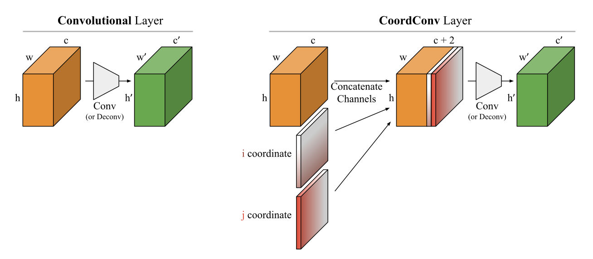

Watters et al. (2019) introduce the Spatial Broadcast Decoder (SBD) as an architecture for the decoder in Variational Auto-Encoders (VAEs) to improve disentanglement in the latent space1, reconstruction accuracy and generalization in limited datasets (i.e., held-out regions in data space). Motivated by the limitations of deconvolutional layers in traditional decoders, these upsampling layers are replaced by a tiling operation in the Spatial Broadcast decoder. Furthermore, explicit spatial information (inductive bias) is appended in the form of coordinate channels leading to a simplified optimization problem and improved positional generalization. As a proof of concept, they tested the model on the colored sprites dataset (known factors of variation such as position, size, shape), Chairs and 3D Object-in-Room datasets (no positional variation), a dataset with small objects and a dataset with dependent factors. They could show that the Spatial Broadcast decoder can be used complementary or as an improvement to state-of-the-art disentangling techniques.
Model Description
As stated in the title, the model architecture of the Spatial Broadcast decoder is very simple: Take a standard VAE decoder and replace all upsampling deconvolutional layers by tiling the latent code \(\textbf{z}\) across the original image space, appending fixed coordinate channels and applying an convolutional network with \(1 \times 1\) stride, see the figure below.
Schematic of the Spatial Broadcast VAE. In the decoder, the latent code \(\textbf{z}\in\mathbb{R}^{k}\) is broadcasted (tiled) to the image width \(w\) and height \(h\). Additionally, two “coordinate” channels are appended. The result is fed to an unstrided convolutional decoder. (right) Pseudo-code of the spatial operation. Taken from Watters et al. (2019).
Motivation: The presented architecture is mainly motivated by two reasons:
Deconvolution layers cause optimization difficulties: Watters et al. (2019) argue that upsampling deconvolutional layers should be avoided, since these are prone to produce checkerboard artifacts, i.e., a checkerboard pattern can be identified on the resulting images (when looking closer), see figure below. These artifacts constrain the reconstruction accuracy and Watters et al. (2019) hypothesize that the resulting effects may raise problems for learning a disentangled representation in the latent space.
A checkerboard pattern can often be identified in artifically generated images that use deconvolutional layers. Taken from Odena et al. (2016) (very worth reading).
Appended coordinate channels improve positional generalization and optimization: Previous work by Liu et al. (2018) showed that standard convolution/deconvolution networks (CNNs) perform badly when trying to learn trivial coordinate transformations (e.g., learning a mapping from Cartesian space into one-hot pixel space or vice versa). This behavior may seem counterintuitive (easy task, small dataset), however the feature of translational equivariance (i.e., shifting an object in the input equally shifts its representation in the output) in CNNs2 hinders learning this task: The filters have by design no information about their position. Thus, coordinate transformations result in complicated functions which makes optimization difficult. E.g., changing the input coordinate slighlty might push the resulting function in a completelty different direction.
CoordConv Solution: To overcome this problem, Liu et al. (2018) propose to append coordinate channels before convolution and term the resulting layer CoordConv, see figure below. In principle, this layer can learn to use or discard translational equivariance and keeps the other advantages of convolutional layers (fast computations, few parameters). Under this modification learning coordinate transformation problems works out of the box with perfect generalization in less time (150 times faster) and less memory (10-100 times fewer parameters). As coordinate transformations are implicitely needed in a variaty of tasks (such as producing bounding boxes in object detection) using CoordConv instead of standard convolutions might increase the performance of several other models.

Comparison of 2D convolutional and CoordConv layers. Taken from Liu et al. (2018).
Positional Generalization: Appending fixed coordinate channels is mainly beneficial in datasets in which same objects may appear at distinct positions (i.e., there is positional variation). The main idea is that rendering an object at a specific position without spatial information (i.e., standard convolution/deconvolution) results in a very complicated function. In contrast,the Spatial Broadcast decoder architecture can leverage the spatial information to reveal objects easily: E.g., by convolving the positions in the latent space with the fixed coordinate channels and applying a threshold operation. Thus, Watters et al. (2019) argue that the Spatial Broadcast decoder architecture puts a prior on dissociating positional from non-positional features in the latent distribution. Datasets without positional variation in turn seem unlikely to benefit from this architecture. However, Watters et al. (2019) showed that the Spatial Broadcast decoder could still help in these datasets and attribute this to the replacement of deconvolutional layers.
Implementation
Watters et al. (2019) conducted experiments with several datasets and could show that incorporating the Spatial Broadcast decoder into state-of-the-art VAE architectures consistently increased their perfomance. While this is impressive, it is always frustrating to not being able to reproduce results due to missing implementation details, less computing resources or simply not having enough time to work on a reimplementation.
The following reimplementation intends to eliminate that frustration by reproducing some of their experiments on much smaller datasets with similar characteristics such that training will take less time (less than 30 minutes with a NVIDIA Tesla K80 GPU).
Data Generation
A dataset that is similar in spirit to the colored sprites dataset will be generated, i.e., procedurally generated objects from known factors of variation. Watters et al. (2019) use a binary dsprites dataset consisting of 737,280 images and transform these during training into colored images by uniformly sampling from a predefined HSV space (see Appendix A.3). As a result, the dataset has 8 factors of variation (\(x\)-position, \(y\)-position, size, shape, angle, 3D-color) with infinite samples (due to sampling of color). They used \(1.5 \cdot 10^6\) training steps.
To reduce training time, we are going to generate a much simpler dataset consisting of \(3675\) images with a circle (fixed size) inside generated from a predefined set of possible colors and positions such that there are only 3 factors of variation (\(x\)-position, \(y\)-position, discretized color). In this case \(3.4 \cdot 10^2\) training steps suffice for approximate convergence.
Visualization of self-written Dataset
The code below creates the dataset. Note that it is kept more generic than necessary to allow the creation of several variations of this dataset, i.e., more dedicated experiments can be conducted.
Code
from PIL import Image, ImageDrawimport torchvision.transforms as transformsimport numpy as npimport torchfrom torch.utils.data import TensorDatasetdef generate_img(x_position, y_position, shape, color, img_size, size=20):"""Generate an RGB image from the provided latent factors Args: x_position (float): normalized x position y_position (float): normalized y position shape (string): can only be 'circle' or 'square' color (string): color name or rgb string img_size (int): describing the image size (img_size, img_size) size (int): size of shape Returns: torch tensor [3, img_size, img_size] (dtype=torch.float32) """# creation of image img = Image.new('RGB', (img_size, img_size), color='black')# map (x, y) position to pixel coordinates x_position = (img_size -2- size) * x_position y_position = (img_size -2- size) * y_position# define coordinates x_0, y_0 = x_position, y_position x_1, y_1 = x_position + size, y_position + size# draw shapes img1 = ImageDraw.Draw(img)if shape =='square': img1.rectangle([(x_0, y_0), (x_1, y_1)], fill=color)elif shape =='circle': img1.ellipse([(x_0, y_0), (x_1, y_1)], fill=color)return transforms.ToTensor()(img).type(torch.float32)def generate_dataset(img_size, shape_sizes, num_pos, shapes, colors):"""procedurally generated from 4 ground truth independent latent factors, these factors are/can be Position X: num_pos values in [0, 1] Poistion Y: num_pos values in [0, 1] Shape: square, circle Color: standard HTML color name or 'rgb(x, y, z)' Args: img_size (int): describing the image size (img_size, img_size) shape_sizes (list): sizes of shapes num_pos (int): discretized positions shapes (list): shapes (can only be 'circle', 'square') colors (list): colors Returns: data: torch tensor [n_samples, 3, img_size, img_size] latents: each entry describes the latents of corresp. data entry """ num_shapes, num_colors, sizes =len(shapes), len(colors), len(shape_sizes) n_samples = num_pos*num_pos*num_shapes*num_colors*sizes data = torch.empty([n_samples, 3, img_size, img_size]) latents = np.empty([n_samples], dtype=object) index =0for x_pos in np.linspace(0, 1, num_pos):for y_pos in np.linspace(0, 1, num_pos):for shape in shapes:for size in shape_sizes:for color in colors: img = generate_img(x_pos, y_pos, shape, color, img_size, size) data[index] = img latents[index] = [x_pos, y_pos, shape, color] index +=1return data, latentscircles_data, latents = generate_dataset(img_size=64, shape_sizes=[16], num_pos=35, shapes=['circle'], colors=['red', 'green', 'blue'])sprites_dataset = TensorDataset(circles_data)
Model Implementation
Although in principle implementing a VAE is fairly simple (see my post for details), in practice one must choose lots of hyperparmeters. These can be divided into three broader categories:
Encoder/Decoder and Prior Distribution: As suggested by Watters et al. (2019) in Appendix A, we use a Gaussian decoder distribution with fixed diagonal covariance structure \(p_{\boldsymbol{\theta}} \left(\textbf{x}^\prime | \textbf{z}^{(i)}\right) = \mathcal{N}\left( \textbf{x}^\prime | \boldsymbol{\mu}_D^{(i)}, \sigma^2 \textbf{I} \right)\), hence the reconstruction accuracy can be calculated as follows3
For the encoder distribution a Gaussian with diagonal covariance \(q_{\boldsymbol{\phi}} \sim \mathcal{N} \left( \textbf{z} | \boldsymbol{\mu}_E, \boldsymbol{\sigma}_D^2 \textbf{I} \right)\) and as prior a centered multivariate Gaussian \(p_{\boldsymbol{\theta}} (\textbf{z}) = \mathcal{N}\left( \textbf{z} | \textbf{0}, \textbf{I} \right)\) are chosen (both typical choices).
Network Architecture for Encoder/Decoder: The network architectures for the standard encoder and decoder consist of convolutional and deconvolutional layers (since these perform typically much better on image data). The Spatial Broadcast decoder defines a different kind of architecture, see Model Description. The exact architectures are taken from Appendix A.1 of Watters et al., see code below4:
Code
from torch import nnclass Encoder(nn.Module):""""Encoder class for use in convolutional VAE Args: latent_dim: dimensionality of latent distribution Attributes: encoder_conv: convolution layers of encoder fc_mu: fully connected layer for mean in latent space fc_log_var: fully connceted layers for log variance in latent space """def__init__(self, latent_dim=6):super().__init__()self.latent_dim = latent_dimself.encoder_conv = nn.Sequential(# shape: [batch_size, 3, 64, 64] nn.Conv2d(3, 64, kernel_size=4, stride=2, padding=1), nn.ReLU(),# shape: [batch_size, 64, 32, 32] nn.Conv2d(64, 64, kernel_size=4, stride=2, padding=1), nn.ReLU(), nn.Conv2d(64, 64, kernel_size=4, stride=2, padding=1), nn.ReLU(), nn.Conv2d(64, 64, kernel_size=4, stride=2, padding=1), nn.ReLU(),# shape: [batch_size, 64, 4, 4], nn.Flatten(),# shape: [batch_size, 1024] nn.Linear(1024, 256), nn.ReLU(),# shape: [batch_size, 256] )self.fc_mu = nn.Sequential( nn.Linear(in_features=256, out_features=self.latent_dim), )self.fc_log_var = nn.Sequential( nn.Linear(in_features=256, out_features=self.latent_dim), )returndef forward(self, inp): out =self.encoder_conv(inp) mu =self.fc_mu(out) log_var =self.fc_log_var(out)return [mu, log_var]class Decoder(nn.Module):"""(standard) Decoder class for use in convolutional VAE, a Gaussian distribution with fixed variance (identity times fixed variance as covariance matrix) used as the decoder distribution Args: latent_dim: dimensionality of latent distribution fixed_variance: variance of distribution Attributes: decoder_upsampling: linear upsampling layer(s) decoder_deconv: deconvolution layers of decoder (also upsampling) """def__init__(self, latent_dim, fixed_variance):super().__init__()self.latent_dim = latent_dimself.coder_type ='Gaussian with fixed variance'self.fixed_variance = fixed_varianceself.decoder_upsampling = nn.Sequential( nn.Linear(self.latent_dim, 256), nn.ReLU(),# reshaped into [batch_size, 64, 2, 2] )self.decoder_deconv = nn.Sequential(# shape: [batch_size, 64, 2, 2] nn.ConvTranspose2d(64, 64, kernel_size=4, stride=2, padding=1), nn.ReLU(),# shape: [batch_size, 64, 4, 4] nn.ConvTranspose2d(64, 64, kernel_size=4, stride=2, padding=1), nn.ReLU(), nn.ConvTranspose2d(64, 64, kernel_size=4, stride=2, padding=1), nn.ReLU(), nn.ConvTranspose2d(64, 64, kernel_size=4, stride=2, padding=1), nn.ReLU(), nn.ConvTranspose2d(64, 3, kernel_size=4, stride=2, padding=1),# shape: [batch_size, 3, 64, 64] )returndef forward(self, inp): ups_inp =self.decoder_upsampling(inp) ups_inp = ups_inp.view(-1, 64, 2, 2) mu =self.decoder_deconv(ups_inp)return muclass SpatialBroadcastDecoder(nn.Module):"""SBD class for use in convolutional VAE, a Gaussian distribution with fixed variance (identity times fixed variance as covariance matrix) used as the decoder distribution Args: latent_dim: dimensionality of latent distribution fixed_variance: variance of distribution Attributes: img_size: image size (necessary for tiling) decoder_convs: convolution layers of decoder (also upsampling) """def__init__(self, latent_dim, fixed_variance):super().__init__()self.img_size =64self.coder_type ='Gaussian with fixed variance'self.latent_dim = latent_dimself.fixed_variance = fixed_variance x = torch.linspace(-1, 1, self.img_size) y = torch.linspace(-1, 1, self.img_size) x_grid, y_grid = torch.meshgrid(x, y, indexing="ij")# reshape into [1, 1, img_size, img_size] and save in state_dictself.register_buffer('x_grid', x_grid.view((1, 1) + x_grid.shape))self.register_buffer('y_grid', y_grid.view((1, 1) + y_grid.shape))self.decoder_convs = nn.Sequential(# shape [batch_size, latent_dim + 2, 64, 64] nn.Conv2d(in_channels=self.latent_dim+2, out_channels=64, stride=(1, 1), kernel_size=(3,3), padding=1), nn.ReLU(),# shape [batch_size, 64, 64, 64] nn.Conv2d(in_channels=64, out_channels=64, stride=(1,1), kernel_size=(3, 3), padding=1), nn.ReLU(),# shape [batch_size, 64, 64, 64] nn.Conv2d(in_channels=64, out_channels=3, stride=(1,1), kernel_size=(3, 3), padding=1),# shape [batch_size, 3, 64, 64] )returndef forward(self, z): batch_size = z.shape[0]# reshape z into [batch_size, latent_dim, 1, 1] z = z.view(z.shape + (1, 1))# tile across image [batch_size, latent_im, img_size, img_size] z_b = z.expand(-1, -1, self.img_size, self.img_size)# upsample x_grid and y_grid to [batch_size, 1, img_size, img_size] x_b =self.x_grid.expand(batch_size, -1, -1, -1) y_b =self.y_grid.expand(batch_size, -1, -1, -1)# concatenate vectors [batch_size, latent_dim+2, img_size, img_size] z_sb = torch.cat((z_b, x_b, y_b), dim=1)# apply convolutional layers mu_D =self.decoder_convs(z_sb)return mu_D
The VAE implementation below combines the encoder and decoder architectures (slightly modified version of my last VAE implementation).
Code
from torch.distributions.multivariate_normal import MultivariateNormalclass VAE(nn.Module):"""A simple VAE class Args: vae_tpe: type of VAE either 'Standard' or 'SBD' latent_dim: dimensionality of latent distribution fixed_var: fixed variance of decoder distribution """def__init__(self, vae_type, latent_dim, fixed_var):super().__init__()self.vae_type = vae_typeifself.vae_type =='Standard':self.decoder = Decoder(latent_dim=latent_dim, fixed_variance=fixed_var)else:self.decoder = SpatialBroadcastDecoder(latent_dim=latent_dim, fixed_variance=fixed_var)self.encoder = Encoder(latent_dim=latent_dim)self.normal_dist = MultivariateNormal(torch.zeros(latent_dim), torch.eye(latent_dim))returndef forward(self, x): z, mu_E, log_var_E =self.encode(x)# regularization term per batch, i.e., size: (batch_size) regularization_term =0.5* (1+ log_var_E - mu_E**2- torch.exp(log_var_E)).sum(axis=1) batch_size = x.shape[0]ifself.decoder.coder_type =='Gaussian with fixed variance':# x_rec has shape (batch_size, 3, 64, 64) x_rec =self.decode(z)# reconstruction accuracy per batch, i.e., size: (batch_size) factor =0.5* (1/self.decoder.fixed_variance) recons_acc =- factor * ((x.view(batch_size, -1) - x_rec.view(batch_size, -1))**2 ).sum(axis=1)return-regularization_term.mean(), -recons_acc.mean()def reconstruct(self, x): mu_E, log_var_E =self.encoder(x) x_rec =self.decoder(mu_E)return x_recdef encode(self, x):# get encoder distribution parameters mu_E, log_var_E =self.encoder(x)# sample noise variable for each batch batch_size = x.shape[0] epsilon =self.normal_dist.sample(sample_shape=(batch_size, ) ).to(x.device)# get latent variable by reparametrization trick z = mu_E + torch.exp(0.5*log_var_E) * epsilonreturn z, mu_E, log_var_Edef decode(self, z):# get decoder distribution parameters mu_D =self.decoder(z)return mu_D
Training Parameters: Lastly, training neural networks itself consists of several hyperparmeters. Again, we are using the same setup as defined in Appendix A.1 of Watters et al. (2019), see code below.
Evaluating the representation quality of trained models is a difficult task, since we are not only interested in the reconstruction accuracy but also in the latent space and its properties. Ideally the latent space offers a disentangled representation such that each latent variable represents a factor of variation with perfect reconstruction accuracy (i.e., for evaluation it is very helpful to know in advance how many and what factors of variation exist). Although there are some metrics to quantify disentanglement, many of them have serious shortcomings and there is yet no consensus in the literature which to use (Watters et al., 2019). Instead of focusing on some metric, we are going to visualize the results by using two approaches:
Reconstructions and Latent Traversals: A very popular and helpful plot is to show some (arbitrarly chosen) reconstructions compared to the original input together with a series of latent space traversals. I.e., taking some encoded input and looking at the reconstructions when sweeping each coordinate in the latent space in a predefined interval (here from -2 to +2) while keeping all other coordinates constant. Ideally, each sweep can be associated with a factor of variation. The code below will be used to generate these plots. Note that the reconstructions are clamped into \([0, 1]\) as this is the allowed image range.
Latent Space Geometry: While latent traversals may be helpful, Watters et al. (2019) note that this techniques suffers from two shortcommings:
Latent space entanglement might be difficult to perceive by eye.
Traversals are only taken at some point in space. It could be that traversals at some points are more disentangled than at other positions. Thus, judging disentanglement by the aforementioned method might be ultimately dependent to randomness.
To overcome these limitations, they propose a new method which they term latent space geometry. The main idea is to visualize a transformation from a 2-dimensional generative factor space (subspace of all generative factors) into the 2-dimensional latent subspace (choosing the two latent components that correspond to the factors of variation). Latent space geometry that preserves the chosen geometry of the generative factor space (while scaling and rotation might be allowed depending on the chosen generative factor space) indicates disentanglement.
To put this into practice, the code below creates circle images by varying \(x\) and \(y\) positions uniformly and keeping the other generative factors (here only color) constant. Accordingly, the geometry of the generative factor space is a uniform grid (which will be plotted). These images will be encoded into mean and variance of the latent distribution. In order to find the latent components that correspond to the \(x\) and \(y\) position, we choose the components with smallest mean variance across all reconstructions, i.e., the most informative components5. Then, we can plot the latent space geometry by using the latent components of the mean (encoder distribution), see code below.
At the log-losses plots, we can already see that using the Spatial Broadcast decoder results in an improved reconstruction accuracy and regularization term. Now let’s compare both models visually by their
While the reconstructions within both models look pretty good, the latent space traversal shows an entangled representation in the standard (DeConv) VAE whereas the Spatial Broadcast model seems quite disentangled.
The latent space geometry verifies our previous findings: The DeConv decoder has an entangled latent space (transformation is highly non linear) whereas in the Spatial Broadcast decoder the latent space geometry highly resembles the generating factors geometry (affine transformation). The transformation of the Spatial Broadcast decoder indicates very similar behavior in the \(X-Y\) position subspace (of generative factors) as in the corresponding latent subspace.
Drawbacks of Paper
although there are fewer parameters in the Spatial Broadcast decoder, it does require more memory (in the implementation about 50% more)
longer training times compared to standard DeConv VAE
appended coordinate channels do not help when there is no positional variation
As outlined by Watters et al. (2019), there is “yet no consensus on the definition of a disentangled representation”. However, in their paper they focus on feature compositionality (i.e., composing a scene in terms of independent features such as color and object) and refer to it as disentangled representation.↩︎
In typical image classification problems, translational equivariance is highly valued since it ensures that if a filter detects an object (e.g., edges), it will detect it irrespective of its position.↩︎
For simplicity, we are setting the number of (noise variable) samples \(L\) per datapoint to 1 (see equation for \(\displaystyle \widetilde{\mathcal{L}}\) in Reparametrization Trick paragraph). Note that Kingma and Welling (2013) stated that in their experiments setting \(L=1\) sufficed as long as the minibatch size was large enough.↩︎
The Spatial Broadcast decoder architecture is slightly modified: Kernel size of 3 instead of 4 to get the desired output shapes.↩︎
An intuitve way to understand why latent compontents with smaller variance within the encoder distribution are more informative than others is to think about the sampled noise and the loss function: If the variance is high, the latent code \(\textbf{z}\) will vary a lot which in turn makes the task for the decoder more difficult. However, the regularization term (KL-divergence) pushes the variances towards 1. Thus, the network will only reduce the variance of its components if it helps to increase the reconstruction accuracy.↩︎